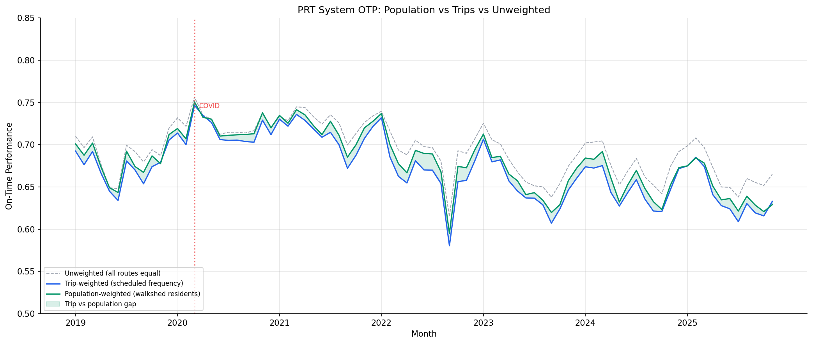

Analysis
45 - Population-Weighted System OTP
Route and Service Drivers
Coverage: 2019-01 to 2025-11 (from otp_monthly).
Built 2026-06-15 11:52 UTC · Commit e5cf673
Page Navigation
Analysis Navigation
Data Provenance
flowchart LR
45_population_weighted_otp(["45 - Population-Weighted System OTP"])
t_otp_monthly[("otp_monthly")] --> 45_population_weighted_otp
01_data_ingestion[["Data Ingestion"]] --> t_otp_monthly
u1_01_data_ingestion[/"data/routes_by_month.csv"/] --> 01_data_ingestion
u2_01_data_ingestion[/"data/PRT_Current_Routes_Full_System_de0e48fcbed24ebc8b0d933e47b56682.csv"/] --> 01_data_ingestion
u3_01_data_ingestion[/"data/Transit_stops_(current)_by_route_e040ee029227468ebf9d217402a82fa9.csv"/] --> 01_data_ingestion
u4_01_data_ingestion[/"data/PRT_Stop_Reference_Lookup_Table.csv"/] --> 01_data_ingestion
u5_01_data_ingestion[/"data/average-ridership/12bb84ed-397e-435c-8d1b-8ce543108698.csv"/] --> 01_data_ingestion
t_route_stops[("route_stops")] --> 45_population_weighted_otp
01_data_ingestion[["Data Ingestion"]] --> t_route_stops
t_stops[("stops")] --> 45_population_weighted_otp
01_data_ingestion[["Data Ingestion"]] --> t_stops
t_routes[("routes")] --> 45_population_weighted_otp
01_data_ingestion[["Data Ingestion"]] --> t_routes
t_census_tracts[("census_tracts")] --> 45_population_weighted_otp
d1_45_population_weighted_otp(("polars (lib)")) --> 45_population_weighted_otp
d2_45_population_weighted_otp(("scipy (lib)")) --> 45_population_weighted_otp
d3_45_population_weighted_otp(("geopandas (lib)")) --> 45_population_weighted_otp
d4_45_population_weighted_otp(("shapely (lib)")) --> 45_population_weighted_otp
classDef page fill:#dbeafe,stroke:#1d4ed8,color:#1e3a8a,stroke-width:2px;
classDef table fill:#ecfeff,stroke:#0e7490,color:#164e63;
classDef dep fill:#fff7ed,stroke:#c2410c,color:#7c2d12,stroke-dasharray: 4 2;
classDef file fill:#eef2ff,stroke:#6366f1,color:#3730a3;
classDef api fill:#f0fdf4,stroke:#16a34a,color:#14532d;
classDef pipeline fill:#f5f3ff,stroke:#7c3aed,color:#4c1d95;
class 45_population_weighted_otp page;
class t_census_tracts,t_otp_monthly,t_route_stops,t_routes,t_stops table;
class d1_45_population_weighted_otp,d2_45_population_weighted_otp,d3_45_population_weighted_otp,d4_45_population_weighted_otp dep;
class u1_01_data_ingestion,u2_01_data_ingestion,u3_01_data_ingestion,u4_01_data_ingestion,u5_01_data_ingestion file;
class 01_data_ingestion pipeline;
Findings
Findings: Population-Weighted System OTP
Summary
The OTP experienced by the average resident-near-a-route is 68.1% -- about 0.85 percentage points higher than the trip-weighted system OTP (67.3%) but 1.27 pp lower than the unweighted average (69.4%). The population-weighted vs trip-weighted gap is statistically significant (paired t = -15.8, p < 0.001; Wilcoxon W = 20, p < 0.001; n = 83 months). PRT's lateness-prone routes concentrate where many people live, but slightly less than scheduled trip frequency alone would imply.
Key Numbers
- Unweighted OTP (all 92 routes equal): 69.4% mean, 69.7% median
- Trip-weighted OTP (
route_stops.trips_7d): 67.3% mean, 67.4% median - Population-weighted OTP (walkshed residents from Analysis 44): 68.1% mean, 68.4% median
- Population vs trip-weighted gap: +0.85 pp (p < 0.001, n = 83 months)
- Cohort: 92 routes with >= 12 months of OTP data, Mar 2018 -- Nov 2025
- Total population_served sum: 2,273,565 (exceeds the 2,171,546 5-county total because residents within walking distance of multiple routes are counted once per route -- see Caveats)
Interpretation
Both weighted schemes pull system OTP down from the unweighted average, meaning that routes carrying more scheduled trips and routes serving more residents both tend to perform somewhat worse than average. The two effects largely overlap -- high-frequency urban-core routes serve dense population centers -- but they are not identical: population weighting penalizes the system roughly half as much as trip weighting does.
The gap is consistent with what Analysis 19 found for ridership weighting (+1.6 pp above trip-weighted): scheduled trip frequency overstates how concentrated rider exposure actually is on the worst-performing routes. Both ridership and walkshed population are distributed somewhat more evenly across the OTP spectrum than scheduled trips are.
This is an area-level association (which routes serve dense areas, weighted by their OTP), not a per-resident estimate.
Observations
- The three series move together over time -- all show the COVID OTP spike in 2020 and the steady decline through late 2022, then partial stabilization through 2024-2025.
- The population vs trip-weighted gap is small but extremely stable across the 83-month window, which is why the paired t-test reaches such a large statistic despite a sub-1pp difference.
- The unweighted-vs-trip-weighted gap (~2.1 pp) is wider than the population-vs-trip gap (~0.85 pp), confirming that route trip frequency is more concentrated on lateness-prone routes than walkshed population is.
Caveats
- Exposure double-counting. Residents within walksheds of multiple routes are counted once per route. Population-weighted OTP is the OTP of the average route-resident exposure, not the average resident. A resident with access to many routes contributes more weight than one served by a single route. Per-resident OTP would require modeling which route each resident actually rides, which we cannot do without trip-level rider data.
- Static walkshed weights.
population_servedis computed from current stops and 2018-2022 ACS population; the same per-route weight is applied to every month. Route footprints and demographics that shifted within the window are not reflected. - Static trip weights.
route_stops.trips_7dis also a current snapshot, not a monthly time series, matching Analysis 19's treatment for comparability. - Cohort. Restricted to 92 routes with >= 12 months of OTP. Routes that exist in the schedule but lack consistent OTP data (e.g., short-lived service) are excluded from all three series.
Validation
- Data source verified.
otp_monthly,route_stops,stops,routes, andcensus_tractscolumns checked againstdata/DATA_DICTIONARY.md. All three table joins use validatedquery_to_polarsresults. - Geographic/temporal scope. All three weighting schemes use the identical 92-route cohort and identical 83-month window; the only difference is the weight column.
- Aggregates sanity-checked. Unweighted system OTP 69.4% mean matches Analysis 01 (system trend) within rounding. Trip-weighted 67.3% matches Analysis 19's trip-weighted 67.8% to within ~0.5 pp -- the small difference is because Analysis 19 restricts to the ridership-overlap window (Jan 2019 - Oct 2024) while this analysis uses the full OTP window.
- Direction of effects checked. Trip-weighted < unweighted is the expected sign (high-frequency routes are more lateness-prone, per Analysis 10 frequency-vs-OTP). Population-weighted falling between the two is the expected pattern given that walkshed population correlates with but is less concentrated than trip frequency.
- Population sum cross-check. The 2,273,565 cohort population sum exceeding the 2,171,546 5-county total directly confirms multi-route exposure overlap; the ratio (~5% over) is small because most multi-route overlap is concentrated in downtown Pittsburgh, which is a small slice of the 5-county population.
- Ecological framing. Findings describe area-level associations (route-level OTP weighted by route-level walkshed population), never per-resident outcomes. Caveat documented above.
Output

monthly OTP under three weighting schemes (unweighted, trip, population).
No interactive outputs declared.
monthly values for all three series, plus route count and total population served.
Preview CSV
mean, median, std, min, max for each weighting scheme.
Preview CSV
per-route population_served and trips_7d used as weights.
Preview CSV
Methods
Methods: Population-Weighted System OTP
Question
What OTP does the average resident of PRT's service area experience, and how does it differ from the OTP of the average route (unweighted) or the average scheduled trip (trip-weighted, Analysis 19)? Service that runs reliably on lightly-populated routes should not look as good as service that runs reliably where many people live.
Approach
- For each route, compute
population_served= ACS tract population within walking distance of any of its stops (400 m for bus, 800 m for rail/incline), areal-interpolated against tract polygons. Same construction as Analysis 44; both analyses call the sharedprt_otp_analysis.walksheds.route_population_served()helper. - Restrict to routes with >= 12 months of OTP observations, matching the Analysis 19 cohort so the three weighting schemes are comparable.
- For each month, compute three system OTP series:
- Unweighted: simple mean of route OTPs.
- Trip-weighted:
sum(otp_i * trips_7d_i) / sum(trips_7d_i)withtrips_7dfromroute_stops(static scheduled-frequency weight). - Population-weighted:
sum(otp_i * population_served_i) / sum(population_served_i)(static walkshed-population weight).
- Compute summary statistics (mean, median, std, min, max) for each scheme.
- Test whether population-weighted differs significantly from trip-weighted via paired t-test and Wilcoxon signed-rank across months.
- Plot the three monthly series with a COVID marker.
Caveat -- exposure double-counting. Residents within the walksheds of multiple routes are counted once per route. The population-weighted OTP is therefore the OTP experienced by the average exposure, not the average resident. A resident with access to many bus routes contributes more weight than one served by a single route. This matches how a rider would perceive the system but does not estimate per-resident OTP; that would require modeling which route(s) each resident actually rides.
Data
| Name | Description | Source |
|---|---|---|
otp_monthly |
Route, month, OTP | prt.db table |
route_stops |
trips_7d for trip-weighted baseline |
prt.db table |
stops, routes |
For walkshed construction | prt.db tables |
census_tracts |
ACS 5-year (2018-2022) tract population, TIGER 2022 polygons | prt.db table (Pipeline 10) |
Output
output/population_weighted_otp_trend.png-- three-series monthly time plotoutput/weighting_comparison.csv-- monthly values for unweighted, trip-weighted, population-weightedoutput/summary_stats.csv-- mean/median/std/min/max for each schemeoutput/route_weights.csv-- per-routepopulation_servedandtrips_7dused as weights, for transparency
Source Code
|
Sources
| Name | Type | Why It Matters | Owner | Freshness | Caveat |
|---|---|---|---|---|---|
| otp_monthly | table | Primary analytical table used in this page's computations. | Produced by Data Ingestion. | Updated when the producing pipeline step is rerun. | Coverage depends on upstream source availability and ETL assumptions. |
Upstream sources (5)
|
|||||
| route_stops | table | Primary analytical table used in this page's computations. | Produced by Data Ingestion. | Updated when the producing pipeline step is rerun. | Coverage depends on upstream source availability and ETL assumptions. |
Upstream sources (5)
|
|||||
| stops | table | Primary analytical table used in this page's computations. | Produced by Data Ingestion. | Updated when the producing pipeline step is rerun. | Coverage depends on upstream source availability and ETL assumptions. |
Upstream sources (5)
|
|||||
| routes | table | Primary analytical table used in this page's computations. | Produced by Data Ingestion. | Updated when the producing pipeline step is rerun. | Coverage depends on upstream source availability and ETL assumptions. |
Upstream sources (5)
|
|||||
| census_tracts | table | Primary analytical table used in this page's computations. | Project pipeline owner not linked. | Refresh cadence unknown. | Coverage depends on upstream source availability and ETL assumptions. |
| polars | dependency | Runtime dependency required for this page's pipeline or analysis code. | Open-source Python ecosystem maintainers. | Version pinned by project environment until dependency updates are applied. | Library updates may change behavior or defaults. |
| scipy | dependency | Runtime dependency required for this page's pipeline or analysis code. | Open-source Python ecosystem maintainers. | Version pinned by project environment until dependency updates are applied. | Library updates may change behavior or defaults. |
| geopandas | dependency | Runtime dependency required for this page's pipeline or analysis code. | Open-source Python ecosystem maintainers. | Version pinned by project environment until dependency updates are applied. | Library updates may change behavior or defaults. |
| shapely | dependency | Runtime dependency required for this page's pipeline or analysis code. | Open-source Python ecosystem maintainers. | Version pinned by project environment until dependency updates are applied. | Library updates may change behavior or defaults. |